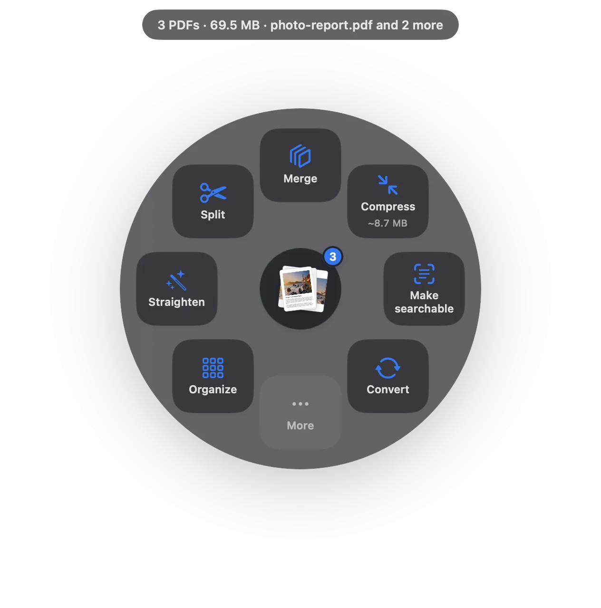

Juntar PDFs no Mac, na ordem que você escolher.
Recibos, digitalizações, contratos e fotos em um único PDF. Selecione no Finder, arraste e pronto, antes de achar o menu da Pré-Visualização.
7 dias grátis · depois uma única compra, sem assinatura · macOS 14+
Resumindo: Para juntar PDFs no Mac, selecione-os no Finder, arraste, pause e escolha Juntar no Sheaf. Você recebe um novo PDF com um marcador por arquivo; os originais não mudam.Atualizado em 13 de novembro de 2026

Três gestos. Cerca de um segundo.
Nenhum app para abrir, nenhuma janela para procurar. Acontece onde o arquivo já está.
- Arraste
Comece a arrastar o arquivo do Finder, do Mail ou da mesa.
- Pause
Fique parado um instante: as ações se abrem em círculo ao redor do cursor.
- Solte em Juntar
Um novo PDF aparece, na ordem da seleção, com marcadores.
Três jeitos, comparados com honestidade.
Pré-Visualização (incluída)
Mostrar miniaturas, arrastar os outros PDFs e exportar como PDF.
- Grátis e incluída
- Fácil soltar no lugar errado
- Pode alterar o original
Sites de PDF online
Enviar, esperar, baixar.
- Seu documento vai para o servidor de outra empresa
- Planos grátis limitam arquivos ou tamanho
- Precisa de internet
SheafMais rápido
Arraste o arquivo, pause, solte.
- PDFs e imagens no mesmo gesto
- Um marcador por arquivo original
- Originais intactos, com Desfazer
PDFs e imagens juntos
O Sheaf aceita PDFs e imagens (JPEG, PNG, HEIC) no mesmo gesto: um formulário digitalizado, duas fotos de recibos e um contrato viram um só PDF.
Escolha a ordem
A junção segue a ordem da seleção. Para mover, girar ou apagar páginas, escolha Organizar e salve um arquivo limpo.
Por enquanto o app está em inglês; funciona com documentos em qualquer idioma.
Perguntas
Posso juntar PDF e JPG?
Sim. O Sheaf aceita PDFs e imagens no mesmo gesto e cria um só PDF.
Como juntar PDFs de graça no Mac?
Na Pré-Visualização: abra o primeiro PDF, mostre as miniaturas, arraste os outros para a barra lateral e exporte como PDF.
Os originais são mantidos?
Sim. O Sheaf cria um novo arquivo e não mexe nos originais.
Seu próximo PDF leva um segundo.
Arraste, pause, solte. Grátis por 7 dias e depois seu com uma única compra. Compartilhamento Familiar incluído.
Baixar para MacMac App Store · macOS 14 ou posterior · Apple Silicon e Intel